湖南省2025年普通高中学业水平选择性考试 物理
限时75分钟 满分100分
一、选择题：本题共6小题，每小题4分，共24分。在每小题给出的四个选项中，只有一项是符合题目要求的。
相关题目：第 1 题 · 第 2 题 · 第 3 题 · 第 4 题 · 第 5 题 · 第 6 题
返回原卷说明与一、单项选择题
题目与已知条件
关于原子核衰变，下列说法正确的是（ ）
A.原子核衰变后生成新核并释放能量，新核总质量等于原核质量
B.大量某放射性元素的原子核有半数发生衰变所需时间，为该元素的半衰期
所用高中知识
质量亏损 ；半衰期的统计意义及其与外界条件无关。
读题与思路
释放能量必伴随质量亏损；半衰期由原子核内部决定，与温度、化学状态无关。
分步解析
- 衰变放出能量，生成物总质量小于原核质量，A错误。
- 半衰期定义为大量原子核有半数发生衰变所需的时间，B正确。
- 半衰期不随温度、压强、化学状态改变，C、D错误。
检查与易错点
半衰期是大量原子核的统计规律，对少数原子核无意义。
本题来源：doc-hunan
返回原卷说明与一、单项选择题
题目与已知条件
如图，物块以某一初速度滑上足够长的固定光滑斜面，物块的水平位移、竖直位移、水平速度、竖直速度分别用 、、、 表示。物块向上运动过程中，下列图像可能正确的是（ ）
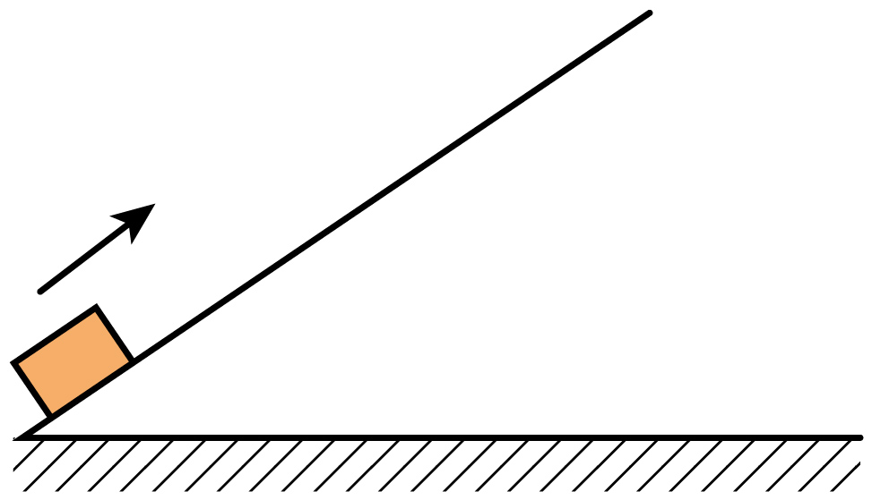
原题图所用高中知识
匀变速直线运动的速度—位移关系 ；运动的分解。
读题与思路
沿斜面匀减速，分解到水平、竖直方向仍是匀减速，速度平方与位移成线性关系，所以速度—位移图像是开口向左的抛物线一段。
分步解析
- 设斜面倾角为 ，加速度大小 。水平分量 ，竖直分量 ，都与初速度分量反向。
- ， 随 减小且图像为曲线（越来越陡），A的直线和B的增大都不对。
- ， 随 减小，图像向下弯曲、末端变陡，与C相符；D为直线，错误。
检查与易错点
匀减速运动的 — 图是直线，而 — 图不是直线。
本题来源：doc-hunan
返回原卷说明与一、单项选择题
题目与已知条件
如图， 为半圆柱体透明介质的横截面， 为直径， 为 的中点。真空中一束单色光从 边射入介质，入射点为 点，折射光直接由 点出射。不考虑光的多次反射，下列说法正确的是（ ）
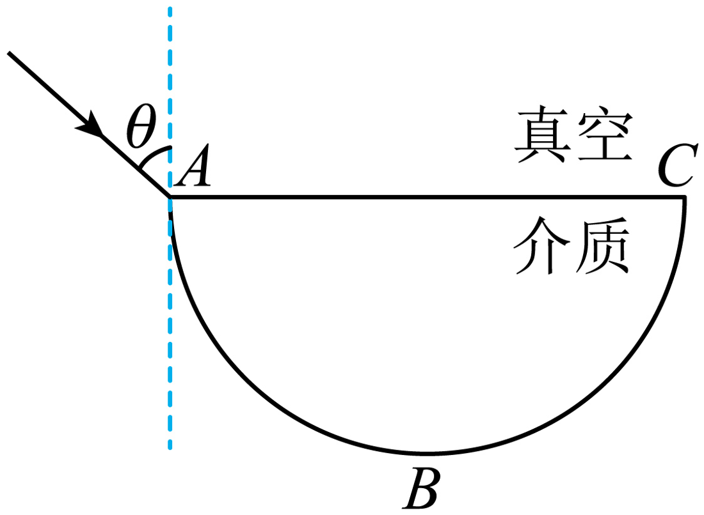
原题图C.增大入射角，该单色光在 上可能发生全反射
D.减小入射角，该单色光在 上可能发生全反射
所用高中知识
折射定律 ；全反射条件 ；圆中弦与两端半径夹角相等。
读题与思路
与直径成45°，可得折射角45°；再研究折射光到达圆弧时的入射角如何随折射角变化。
分步解析
- 法线在 点垂直于 ，弦 与 成45°，故折射角 。。由 得 ，A错误；又 ，，B错误。
- 折射光是从 出发的弦，它与 处半径（即 ）夹角为 ，到达圆弧时的入射角也等于 。
- 临界角满足 ，。增大 ，，光射到 上，入射角 ，不能全反射，C错误。
- 减小 ，，光射到 上，入射角 可大于 ，可能发生全反射，D正确。
检查与易错点
从直径端点发出的弦，到达圆弧时与法线的夹角等于它与直径的夹角，不要误认为射到圆弧上一定垂直入射。
本题来源：doc-hunan
返回原卷说明与一、单项选择题
题目与已知条件
我国研制的“天问二号”探测器，任务是对伴地小行星及彗星交会等进行多目标探测。某同学提出探究方案，通过释放卫星绕小行星进行圆周运动，可测得小行星半径 和质量 。为探测某自转周期为 的小行星，卫星先在其同步轨道上运行，测得距离小行星表面高度为 ，接下来变轨到小行星表面附近绕其做匀速圆周运动，测得周期为 。已知引力常量为 ，不考虑其他天体对卫星的引力，可根据以上物理量得到 ，。下列选项正确的是（ ）
A. 为 ， 为 ， 为
B. 为 ， 为 ， 为
C. 为 ， 为 ， 为
D. 为 ， 为 ， 为
所用高中知识
开普勒第三定律；万有引力提供向心力 。
读题与思路
同步轨道周期等于自转周期 、半径 ；近表面轨道周期 、半径 。
分步解析
- 由开普勒第三定律 ，得 ，，故 ，。
- 近表面轨道 ，，故 。
检查与易错点
同步轨道半径是 而不是 ；求质量要用与 对应的近表面周期。
本题来源：doc-hunan
返回原卷说明与一、单项选择题
题目与已知条件
如图，两带电小球的质量均为 ，小球A用一端固定在墙上的绝缘轻绳连接，小球B用固定的绝缘轻杆连接。A球静止时，轻绳与竖直方向的夹角为60°，两球连线与轻绳的夹角为30°，整个系统在同一竖直平面内，重力加速度大小为 。下列说法正确的是（ ）
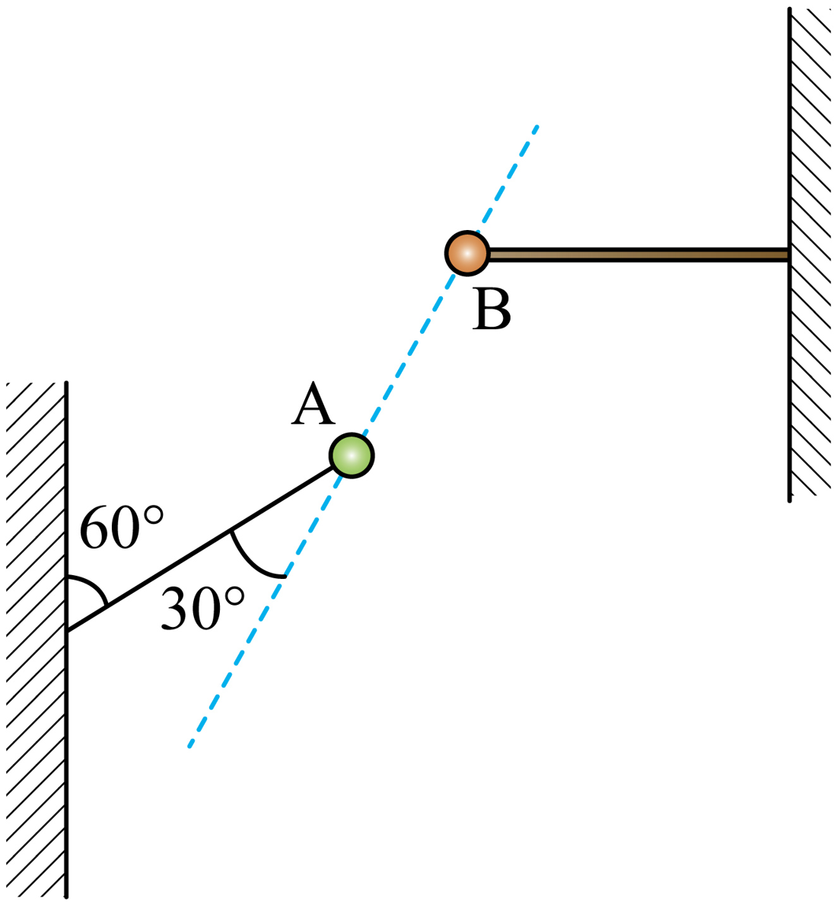
原题图所用高中知识
共点力平衡（拉密定理或正交分解）；绳的拉力可突变、库仑力不突变。
读题与思路
先由几何定出三个力的方向：重力竖直向下，绳拉力沿绳指向墙（左下方，与竖直向下成60°），库仑力沿 指向B（右上方，与水平成60°），再求大小。
分步解析
- 三力方向两两夹角：库仑力与绳拉力夹150°，库仑力与重力夹150°，绳拉力与重力夹60°。由拉密定理 ，得 ，，A、B错误。
- 剪断绳瞬间库仑力和重力不变，二者合力与原拉力等大反向，大小为 ，，C正确。
- B始终静止，所受库仑力与重力在剪断瞬间都不变，轻杆对B的作用力不变，D错误。
检查与易错点
两球相互吸引，库仑力指向B；剪断绳时库仑力不会立即改变。
本题来源：doc-hunan
返回原卷说明与一、单项选择题
题目与已知条件
如图，某小组设计了灯泡亮度可调的电路，、、 为固定的三个触点，理想变压器原、副线圈匝数比为 ，灯泡L和三个电阻的阻值均恒为 ，交变电源输出电压的有效值恒为 。开关S与不同触点相连，下列说法正确的是（ ）
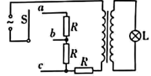
原题图B.S与 相连，灯泡两端的电压为
C.S与 相连，流过灯泡的电流为
D.S与 相连，灯泡的电功率为
所用高中知识
理想变压器 、；副线圈负载等效到原线圈为 。
读题与思路
S接 、、 时原线圈串联电阻分别为 、、。把灯泡等效为原线圈回路中的电阻 计算。
分步解析
- 串联电阻为 时，，灯泡电流 ， 越小功率越大；接 时 最大，功率最小，A错误。
- 接 ：，B正确。
- 接 ：，C漏了因子 ，错误。
- 接 ：，D错误。
检查与易错点
接触点越靠下，串入原线圈回路的电阻越少，灯泡越亮。
本题来源：doc-hunan
二、选择题：本题共4小题，每小题5分，共20分。在每小题给出的四个选项中，有多项符合题目要求。全部选对的得5分，选对但不全的得3分，有选错的得0分。
相关题目：第 7 题 · 第 8 题 · 第 9 题 · 第 10 题
返回二、多项选择题（20分）
题目与已知条件
如图，、、 在 平面内，两波源分别置于 、 两点。 时，两波源从平衡位置起振，起振方向相同且垂直于 平面。频率均为2.5 Hz。两波源持续产生振幅相同的简谐横波，波分别沿 、 方向传播，波速均为10 m/s。下列说法正确的是（ ）
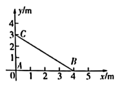
原题图（坐标单位：m）B. 时， 处质点加速度为0
C. 时， 处质点速度不为0
D. 时， 处质点速度为0
所用高中知识
；波传到某点的时间；振动的叠加。
读题与思路
分别求两列波到达 的时刻，再看给定时刻各自已振动了多少个周期。
分步解析
- ，A正确；。
- ， 波于 到达 ；， 波于 到达。
- 时只有 波， 已振动 ，位于最大位移处，速度为0、加速度最大，B、C错误。
- 时， 波使 振动了 （在负向最大位移）， 波使 振动了 （在正向最大位移），两者速度都为0，合速度为0，D正确。
检查与易错点
起振方向相同，用“已振动的时间”而不是波源时刻判断各自的振动状态。
本题来源：doc-hunan
返回二、多项选择题（20分）
题目与已知条件
一匀强电场的方向平行于 平面，平面内 点和 点的位置如图所示。电荷量为 、 和 的三个试探电荷先后分别置于 点、 点和 点时，电势能均为 。下列说法正确的是（ ）
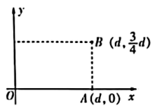
原题图：A(d,0)，B(d,3d/4)C.电场强度的大小为
D.电场强度的大小为
所用高中知识
；匀强电场中电势随位置线性变化，。
读题与思路
求出三点电势，设 ，解出两个系数即得场强的方向与大小。
分步解析
- ，，。 中点电势为 ，A正确。
- 由 得 ；由 得 。
- ，方向与 轴正方向成 ，B错误。
- ，C错误，D正确。
检查与易错点
电荷正负不同，电势要用 计算，不能直接认为三点等势。
本题来源：doc-hunan
返回二、多项选择题（20分）
题目与已知条件
如图，关于 轴对称的光滑导轨固定在水平面内，导轨形状为抛物线，顶点位于 点。一足够长的金属杆初始位置与 轴重合，金属杆的质量为 ，单位长度的电阻为 。整个空间存在竖直向上的匀强磁场，磁感应强度为 。现给金属杆一沿 轴正方向的初速度 ，金属杆运动过程中始终与 轴平行，且与电阻不计的导轨接触良好。下列说法正确的是（ ）
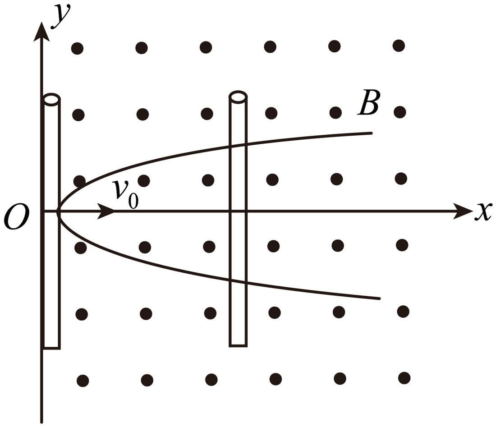
原题图A.金属杆沿 轴正方向运动过程中，金属杆中电流沿 轴负方向
B.金属杆可以在沿 轴正方向的恒力作用下做匀速直线运动
C.金属杆停止运动时，与导轨围成的面积为
D.若金属杆的初速度减半，则金属杆停止运动时经过的距离小于原来的一半
所用高中知识
右手定则；有效长度变化的动生电动势；动量定理 。
读题与思路
接入长度 随 增大，但回路电阻也正比于 ，电流 与长度无关；安培力的冲量与扫过的面积成正比。
分步解析
- 速度沿 、磁场沿 ，正电荷受力 沿 ，电流沿 轴负方向，A正确。
- 安培力 ，匀速时 不变而 增大，安培力增大，恒力不能维持匀速，B错误。
- 由动量定理 ，得 ，C正确。
- 初速度减半，面积减半。抛物线 时 ，，距离变为原来的 ，大于一半，D错误。
检查与易错点
回路电阻随杆接入长度变化，电流反而与长度无关；面积与位移不是正比关系。
本题来源：doc-hunan
返回二、多项选择题（20分）
题目与已知条件
如图，某爆炸能量测量装置由装载台和滑轨等构成，C是可以在滑轨上运动的标准测量件，其规格可以根据测量需求进行调整。滑轨安装在高度为 的水平面上。测量时，将弹药放入装载台圆筒内，两端用物块A和B封装，装载台与滑轨等高。引爆后，假设弹药释放的能量完全转化为A和B的动能。极短时间内B嵌入C中形成组合体D，D与滑轨间的动摩擦因数为 。D在滑轨上运动 距离后抛出，落地点距抛出点水平距离为 ，根据 可计算出弹药释放的能量。某次测量中，A、B、C质量分别为 、、，，整个过程发生在同一竖直平面内，不计空气阻力，重力加速度大小为 。则（ ）
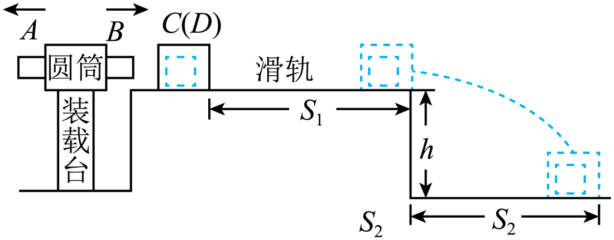
原题图C.弹药释放的能量为
D.弹药释放的能量为
所用高中知识
爆炸与完全非弹性碰撞中的动量守恒；动能定理；平抛运动。
读题与思路
爆炸后A、B动量等大反向；B与C完全非弹性碰撞；由平抛求出D离开滑轨时的速度，再倒推。
分步解析
- 设A速度 ，由 得 。B嵌入C：，。
- ，而 ，A错误。
- 滑轨上摩擦做功 ，下落过程重力做功 ，两者相等，落地动能等于D的初动能，B正确。
- 平抛：，；滑轨上 。
- 释放能量 ，C错误，D正确。
检查与易错点
嵌入过程有机械能损失，不能用B的动能直接代替D的动能。
本题来源：doc-hunan
返回三、非选择题（56分）
题目与已知条件
某同学通过观察小球在黏性液体中的运动，探究其动力学规律，步骤如下：
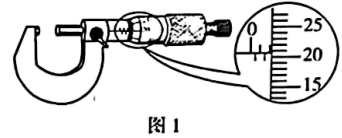
图1 螺旋测微器
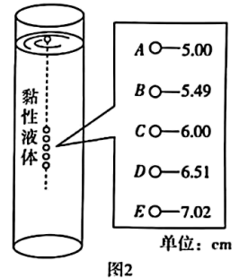
图2 频闪照片示意（单位：cm）
（1）用螺旋测微器测量小球直径 如图1所示，______mm。
（2）在液面处由静止释放小球，同时使用频闪摄影仪记录小球下落过程中不同时刻的位置，频闪仪每隔0.5 s闪光一次。装置及所拍照片示意图如图2所示（图中的数字是小球到液面的测量距离，单位是cm）。
（3）根据照片分析，小球在 、 两点间近似做匀速运动，速度大小 ______m/s（保留2位有效数字）。
（4）小球在液体中运动时受到液体的黏滞阻力 （ 为与液体有关的常量），已知小球密度为 ，液体密度为 ，重力加速度大小为 ，则 的表达式为 ______（用题中给出的物理量表示）。
（5）为了进一步探究动力学规律，换成直径更小的同种材质小球，进行上述实验，匀速运动时的速度将______（填“增大”“减小”或“不变”）。
所用高中知识
螺旋测微器读数；频闪照片求速度；匀速运动的受力平衡（重力、浮力、黏滞阻力）。
读题与思路
匀速时 ，用体积 表示质量与浮力。
分步解析
- （1）固定刻度2 mm（半毫米线未露出），可动刻度20.7格，（2.205～2.207均可）。
- （3） 到 经过4个间隔共2.0 s，位移 ，。
- （4）匀速：，得 。
- （5），直径变小，匀速速度减小。
答案
（1）2.207（2.205～2.207） （3） （4） （5）减小
检查与易错点
相邻两点间隔0.5 s， 到 是4个间隔；不要漏掉浮力。
本题来源：doc-hunan
返回三、非选择题（56分）
题目与已知条件
车辆运输中若存在超载现象，将带来安全隐患。由普通水泥和导电材料混合制成的导电水泥，可以用于监测道路超载问题。某小组对此进行探究。
（1）选择一块均匀的长方体导电水泥块样品，用多用电表粗测其电阻。将多用电表选择开关旋转到“×1k”挡，正确操作后，指针位置如图1所示，则读数为______Ω。
（2）进一步提高实验精度，使用伏安法测量水泥块电阻，电源 电动势6 V，内阻可忽略，电压表量程0～6 V，内阻约10 kΩ，电流表量程0～600 μA，内阻约100 Ω。实验中要求滑动变阻器采用分压接法，在图2中完成余下导线的连接______。
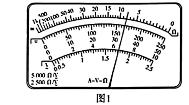
图1 多用电表表盘
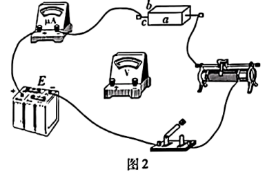
图2 实物连线
（3）如图2，测量水泥块的长为 ，宽为 ，高为 。用伏安法测得水泥块电阻为 ，则电阻率 ______（用 、、、 表示）。
（4）测得不同压力 下的电阻 ，算出对应的电阻率 ，作出 — 图像如图3所示。
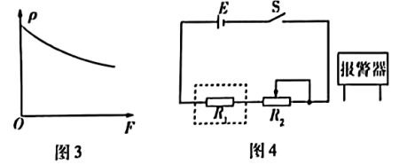
图3 ρ—F图像；图4 报警电路
（5）基于以上结论，设计压力报警系统，电路如图4所示。报警器在两端电压大于或等于3 V时启动， 为水泥块， 为滑动变阻器，当 的滑片处于某位置， 上压力大于或等于 时，报警器启动。报警器应并联在______两端（填“”或“”）。
（6）若电源 使用时间过长，电动势变小， 上压力大于或等于 时，报警器启动，则 ______（填“大于”“小于”或“等于”）。
所用高中知识
欧姆表读数；电流表内、外接法的选择；电阻定律 ；串联分压。
读题与思路
先比较待测电阻与 选内接；报警电压要随压力增大而增大，从而确定报警器的位置。
分步解析
- （1）欧姆刻度读数约8.0，乘以倍率1k，得 （8000 Ω）。
- （2），电流表内接；滑动变阻器两端固定接线柱接电源与开关，滑片与一端接被测电路（分压）。
- （3）电流沿长度 方向流过，横截面积为 ：，。
- （5）由图3，压力增大时电阻率减小， 减小， 两端电压增大；要使压力达到 时电压升到3 V，报警器应并联在 两端。
- （6）电动势变小，要使 两端电压仍达到3 V，需 更小，即压力更大， 大于 。
答案
（1）8000（） （2）分压接法、电流表内接（连线见解析） （3） （5） （6）大于
检查与易错点
欧姆表读数要乘倍率；报警器并在哪个电阻两端，要看压力增大时哪一部分电压升高。
本题来源：doc-hunan
返回三、非选择题（56分）
题目与已知条件
用热力学方法可测量重力加速度。如图所示，粗细均匀的细管开口向上竖直放置，管内用液柱封闭了一段长度为 的空气柱。液柱长为 ，密度为 。缓慢旋转细管至水平，封闭空气柱长度为 ，大气压强为 。
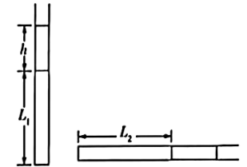
原题图
（1）若整个过程中温度不变，求重力加速度 的大小；
（2）考虑到实验测量中存在各类误差，需要在不同实验参数下进行多次测量，如不同的液柱长度、空气柱长度、温度等。某次实验测量数据如下，液柱长 ，细管开口向上竖直放置时空气柱温度 。水平放置时调控空气柱温度，当空气柱温度 时，空气柱长度与竖直放置时相同。已知 ，。根据该组实验数据，求重力加速度 的值。
所用高中知识
玻意耳定律、查理定律；液柱产生的压强 。
读题与思路
竖直时气体压强 ，水平时为 ；（1）等温，（2）等容。
分步解析
- （1），得 。
- （2）体积相同：，。
- 。
答案
（1）；（2）
检查与易错点
开口向上时封闭气体压强比大气压大 ；水平时液柱不产生附加压强。
本题来源：doc-hunan
返回三、非选择题（56分）
题目与已知条件
如图，直流电源的电动势为 ，内阻为 ，滑动变阻器 的最大阻值为 ，平行板电容器两极板水平放置，板间距离为 ，板长为 ，平行板电容器的右侧存在方向垂直纸面向里的匀强磁场。闭合开关S，当滑片处于滑动变阻器中点时，质量为 的带正电粒子以初速度 水平向右从电容器左侧中点 进入电容器，恰好从电容器下极板右侧边缘 点进入磁场，随后又从电容器上极板右侧边缘 点进入电容器，忽略粒子重力和空气阻力。
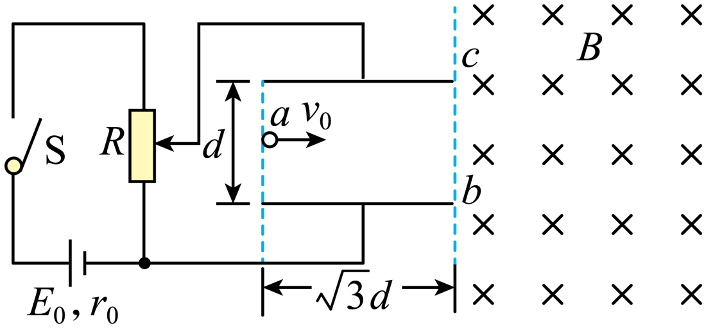
原题图
（1）求粒子所带电荷量 ；
（2）求磁感应强度 的大小；
（3）若粒子离开 点时，在平行板电容器的右侧再加一个方向水平向右的匀强电场，场强大小为 ，求粒子相对于电容器右侧的最远水平距离 。
所用高中知识
闭合电路欧姆定律；类平抛运动；洛伦兹力作圆周运动及弦切角；电磁复合场中的动量与能量关系。
读题与思路
电容器电压等于变阻器下半段电压；由偏转量求 ；由 、 两点的弦与速度方向求半径；（3）用“竖直方向动量变化 = ”与能量守恒联立。
分步解析
- （1）电路电流 ，电容器电压 。偏转：，解得 。
- 在 点 ，速度 ，方向与水平成30°向下。
- （2）弦 竖直、长 ，速度与弦夹角120°，圆心角240°，弦长 ，。。
- （3）设向上为正，竖直方向 ，即 。最远处 ，由能量守恒 ，其中 。
- 令 ，得 ，取正根 ，所以 。
答案
（1）；（2）；（3）
检查与易错点
电容器电压只取变阻器下半段；复合场中洛伦兹力不做功，但其冲量的竖直分量与水平位移成正比。
本题来源：doc-hunan
返回三、非选择题（56分）
题目与已知条件
某地为发展旅游经济，因地制宜利用山体举办了机器人杂技表演。表演中，需要将质量为 的机器人抛至悬崖上的 点，图为山体截面与表演装置示意图。、 为同一水平面上两条光滑平行轨道，轨道中有质量为 的滑杆。滑杆用长度为 的轻绳与机器人相连。初始时刻，轻绳绷紧且与轨道平行，机器人从 点以初速度 竖直向下运动， 点位于轨道平面上，且在 点正下方，。滑杆始终与轨道垂直，机器人可视为质点且始终在同一竖直平面内运动，不计空气阻力，轻绳不可伸长，，重力加速度大小为 。
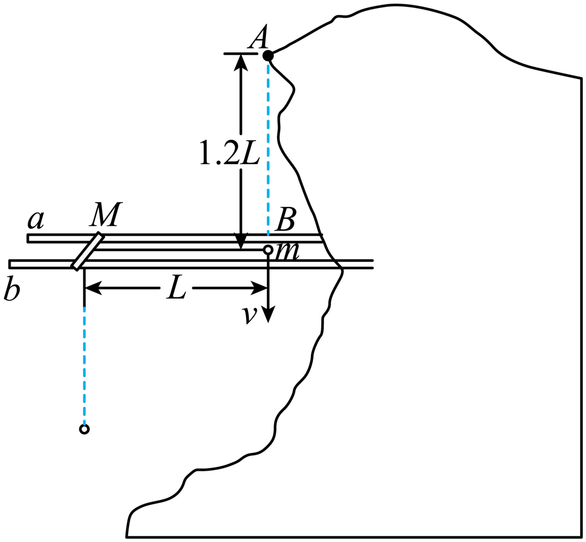
原题图
（1）若滑杆固定，，当机器人运动到滑杆正下方时，求轻绳拉力的大小；
（2）若滑杆固定，当机器人运动到滑杆左上方且轻绳与水平方向夹角为37°时，机器人松开轻绳后被抛至 点，求 的大小；
（3）若滑杆能沿轨道自由滑动，，且 ，当机器人运动到滑杆左上方且轻绳与水平方向夹角为37°时，机器人松开轻绳后被抛至 点，求 与 的关系式及 的最小值。
所用高中知识
竖直面内圆周运动；斜抛运动；水平方向动量守恒与人船模型（质心不动）；机械能守恒。
读题与思路
（2）由释放点位置与速度方向算抛出速率，再用机械能守恒求 ；（3）机器人相对滑杆仍做圆周运动，水平动量为零确定滑杆速度与位移，再同样处理。
分步解析
- （1）到最低点：，，。
- （2）机器人从滑杆右侧向下出发、顺时针转动，到左上方时位置比 左移 、上升 ，速度沿切线向右上方，与水平成53°。设速率 ，抛到 ：水平 ，；竖直 ，得 。机械能守恒 ，。
- （3）水平总动量为零。设机器人相对滑杆速率 （沿与水平成53°的方向），滑杆速度 ：，，机器人对地速度 ，。
- 质心水平位置不变：释放时机器人在 左侧 处、高 。抛到 ：，竖直方程同上，得 。
- 能量：，化简得 。
- ，随 增大而增大， 时最小：。
答案
（1）；（2）；（3），
检查与易错点
（3）中滑杆也有动能，且释放点的水平位置因滑杆后退而改变； 时结果应退化为（2）的 ，可用来检验。
本题来源：doc-hunan
题源与核验说明
- 2025年高考真题——物理（湖南卷） Word版含解析.docx所附湖南卷原卷文件（含参考解析）；SHA-256：2e4b271c5e86f9bad57379f375f7e8bfe1360e76bbe8a9f1dae46aa03a2f72e1
- 2025年高考真题——物理（湖南卷） Word版无答案.docx所附湖南卷无答案版（缺第15题第（3）问）；SHA-256：357093da138193b16ac74e9f2e089aa807280938997abf5af54afb76c029a20d
- 所附湖南卷原卷文件逐题转录题干、选项与图；所附解析仅作推导后的交叉核对。